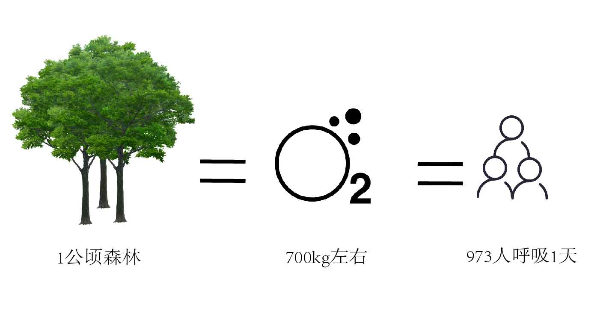
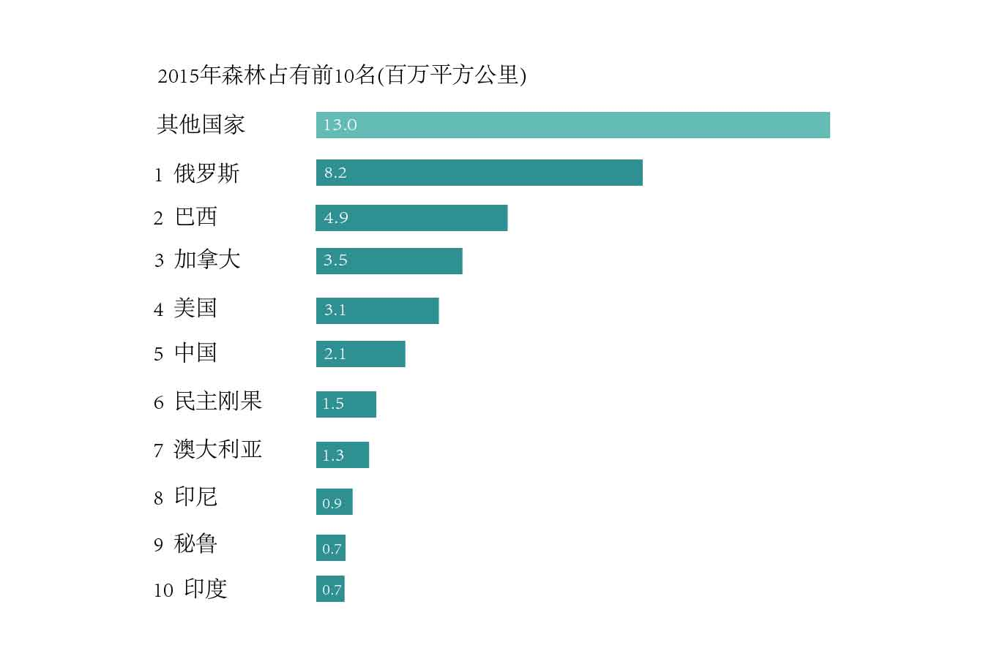
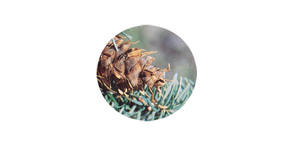
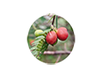
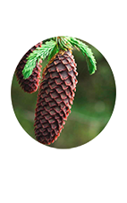
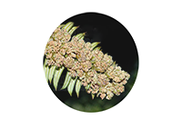
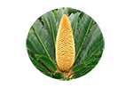

四川省森林资源总量持续增长，
裸子植物种类、数量居全国第一位。
其中，银杏科为四川独有，松科在全
国占比最大。

森林能带来的--
森林资源是林地及其所生长的森林有机体的总称。这里指以林木资源为主，还包括林下植物、野生动物、土壤微生物等资源。森林可以更新，属于再生的自然资源。反映森林资源数量的主要指标是森林面积和森林蓄积量。
森林资源是地球上最重要的资源之一，是生物多样化的基础，它不仅能够为生产和生活提供多种宝贵的木材和原材料，能够为人类经济生活提供多种食品，更重要的是森林能够调节气候、保持水土、防止和减轻旱涝、风沙、冰雹等自然灾害；还有净化空气、消除噪音等功能；同时森林还是天然的动植物园，哺育着各种飞禽走兽和生长着多种珍贵林木和药材。

1公顷的森林每天可以产生一天可以消耗1000千克的二氧化碳释放700kg左右的氧气。而产生的氧气能够使973个成年人呼吸一天。
世界的森林--
1985年-2015年世界森林面积变化
1990年，全球森林面积约41.28亿公顷，占全球土地面积的31.6％，而到2015年则变为30.6％，约39.99亿公顷。
25年里我们失去了1.29亿公顷的森林，几乎与南非的国土面积相当（1219912平方公里）。
2015年世界各国森林覆盖率（%）
这十个国家拥有世界上2/3的森林

俄罗斯联邦、巴西、加拿大、美国和中国是世界上森林面积最大的5个国家，世界上有十个国家或地区根本没有森林。在世界5个森林大国中，俄罗斯(第1)的森林覆盖率为49.4%，巴西(第2)的森林覆盖率为61.9%，是当之无愧的森林大国。中国(第5)虽然森林面积广阔，但森林覆盖率仅为21.6%。
中国的森林--
中国历史上曾经是一个多林的国家，经考证分析在4000年前的远古时代，森林覆盖率高达60%以上，但是随着历史的发展,森林资源日趋减少。到2200年前的战国末期降为46%,1100年前的唐代约为33%,600年前的明代之初为26%,1840年前后约降为17%,新中国成立前夕降为12.5%。 中国近代是森林资源受破坏最严重的时期。森林资源的消长与人口数量，社会生产力水平有关,森林的消失必然导致一系列生态和社会问题。
2009年-2016年中国森林变化情况
根据数据图，我们可以清楚的看到近年来情况逐渐转好，森林相关的可持续发展一直在进行中。党的十八大以来，全国完成造林5.08亿亩。而今年的政府工作报告，又提出了2018年造林1亿亩的目标。1亿亩约6.67万平方公里，约等于一个宁夏回族自治区的面积。
2017年中国主要城市森林覆盖率(%)
四川的森林特征--
四川省近年来森林林地覆盖率
春回大地，万物复苏。生态建设也促进了绿色富民的特色产业发展。
据了解，2017年，全省林业人均收入达到1270元，比2012年增加了75%，
大熊猫、森林、湿地、乡村四大生态旅游品牌已经形成，实现林业总产值
已超300亿元。
裸子植物种类
|  |  | |||
别名：铁头榧、球果榧 红豆杉科 Taxaceae 国家二级保护植物 |
别名：红豆树、紫杉等 红豆杉科 Taxaceae 国家一级保护植物 |
别名：建柏、滇柏 柏科 Cupressaceae 国家二级保护植物 |
别名：黄帝杉、罗汉松 松科 Pinaceae 国家三级保护植物 |
别名：水树 松科 Pinaceae 国家二级保护植物 |
|  |  |  | ||
松科 Pinaceae 国家二级保护植物 |
别名：藏杉，桃松等 三尖杉科 Cephalotaxaceae 国家二级保护植物 |
松科 Pinaceae 国家二级保护植物 |
别名：活化石，梳子杉 杉科 Taxodiaceae 国家一级保护植物 |
苏铁科 Cycadaceae 国家一级保护植物 |